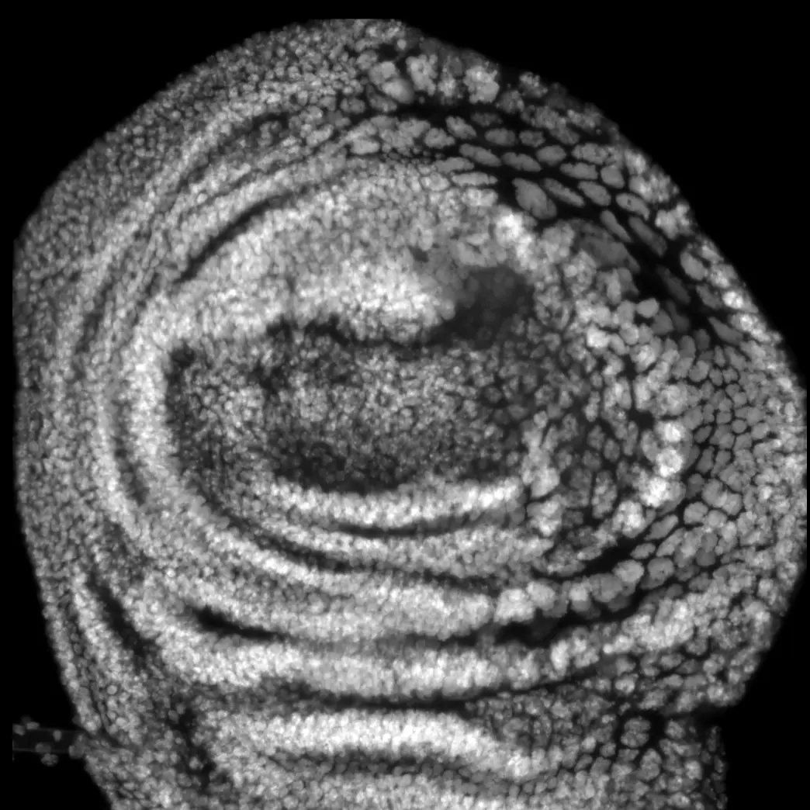
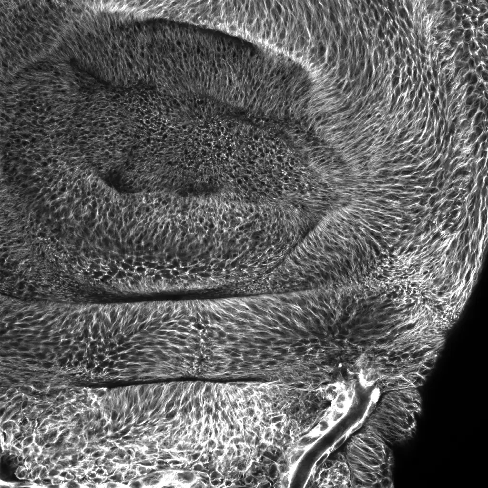

Cellular heterogeneity shapes how tissues adapt and evolve.
Even cells that share the same genetic background can differ in ploidy, chromosome organization, transcriptional activity, morphology, and behavior. This diversity allows tissues to respond to developmental demands, environmental stress, and cellular damage, while also creating opportunities for pathological change and cellular evolution.
Rather than treating heterogeneity simply as biological noise, we study it as an organized and dynamic landscape of cellular states.

Polyploid cells provide a powerful system for studying the organization and behavior of amplified genomes.
01 / Central theme
Managing Amplified Genomes
Polyploidy expands the range of chromosome configurations, transcriptional programs, cellular morphologies, and behaviors available to a cell.
Polyploid cells contain multiple copies of their genome and are found throughout animal development, tissue regeneration, aging, and cancer. Although polyploidy is often treated as a single cellular condition, polyploid cells can adopt remarkably different forms, functions, and capacities for division.
We are developing the concept of Amplified Genome Management to describe the strategies polyploid cells use to organize their chromosomes, regulate genome activity, maintain cellular function, and survive physiological stress.
Using inducible Drosophila models across multiple tissues and cell lineages, we investigate how chromosome organization relates to genome utilization, stress resilience, and mitotic competence.
Polyploid State Space
A framework for mapping the diverse states available to polyploid cells—and for asking whether transitions among those states can be predicted and redirected.
Research connection
Polyploidy in cancer
Genetically mosaic Drosophila tissues reveal how local tissue environments shape tumor invasion.
02 / Disease context
Tumor Invasion & Cellular Heterogeneity
Cells carrying the same oncogenic mutations can behave very differently depending on where they arise and the cellular states they adopt.
Using genetically mosaic Drosophila tumor models, we discovered that epithelial tumors preferentially initiate invasion from specific tissue-intrinsic regions that we termed invasion hotspots. These regions possess distinctive structural and signaling properties that make the local epithelium particularly vulnerable to oncogenic transformation and basement-membrane disruption.
We are now investigating how invasive tumors diversify into distinct cellular states and how these heterogeneous populations cooperate during collective invasion. Rather than viewing a tumor as a uniform population, we ask how transient and specialized states divide the work required for growth, tissue remodeling, stress adaptation, and invasion.
Polyploid cancer cells represent one component of this heterogeneous system, connecting tumor progression with our studies of amplified genome management.
Selected work
Publications on tumor invasion
Drosophila epithelia reveal how surviving cells compensate for local cell loss.
03 / Tissue function
Homeostasis & Tissue Repair
When cell proliferation is limited, tissues require alternative strategies to replace lost cellular capacity.
Our previous work identified compensatory cellular hypertrophy, a tissue-repair mechanism in which surviving cells undergo polyploidization and increase their size to compensate for neighboring cell loss. In Drosophila epithelia, local tissue stretching acts as a mechanical signal that triggers this transition, allowing the tissue to restore its coverage without cell division.
Similar polyploid responses occur in many regenerative and postmitotic tissues across animal species. We are now revisiting tissue repair through the framework of amplified genome management.
We ask how genome amplification supports the increased functional demands placed on surviving cells, how polyploid cells maintain their enlarged genomes, and whether the same genome-management strategies also enhance resistance to cellular stress.
A connected response
Cell loss → mechanical challenge → polyploidization → amplified genome management → functional compensation and survival.
Selected work
Publications on tissue homeostasis
Across these systems, we seek principles that explain how heterogeneous cellular states emerge, interact, and evolve.
Interested in our research? →